ואיך היתה הדרך שלכם לכאן?
בין אם ברכב, ברגל, באוטובוס או ברכבת — אולי שמתם לב למשהו בסביבה שתפס את תשומת הלב.
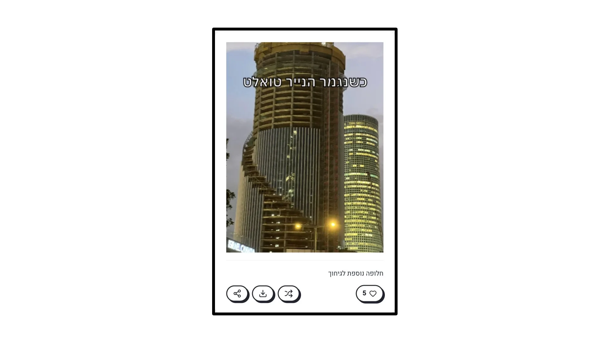
ברגע שקראתם את המם — קראתם את המקום. לפרשנות שלנו למקום שבו אנחנו חיים יש כיום אינספור ערוצים, והמם הוא אחד המהירים והמדויקים שבהם: הוא אינו רק מוסיף עוד נתון על המקום — הוא מחבר בין דברים שלא בהכרח היו קשורים קודם, ובחיבור הזה נחשפת קריאה חדשה של המרחב. בתגובה האישית הזו, אני חושב, טמון ערך גדול לתכנון.
מתוך כך נולדו שאלות הפרויקט. ובמילים פשוטות: כיצד ניתן להשתמש בממים ככלים תכנוניים? מה תפקיד האדריכל במערכת כזו — ומה תפקיד התבנית הממטית?
כדי לבחון את השאלה נבנו שני תוצרים, ושניהם חיים אונליין:
פלטפורמה ליצירה ולשיתוף של ממים על המרחב הבנוי — איסוף הרגעים שבהם אנשים מזהים משהו במרחב ומגיבים אליו.
אל הפלטפורמה ←מערכת המשתמשת בקריאות הללו — בממים מן הפלטפורמה — כדי לגלות צורות הסתכלות חדשות על המרחב, וליצור מעבר אל פעולה אדריכלית.
אל המערכת ←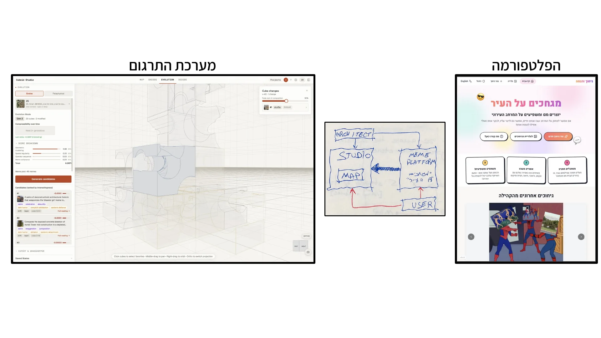
אבל… למה דווקא ממים? אנחנו מכירים את המם כ״תמונות מצחיקות באינטרנט״, אך מם הוא הרבה מעבר לכך: תבנית תרבותית שעוברת בין הדורות — MEME = CULTURAL GENE, כפי שטבע דוקינס ב־1976. התבנית עשויה להשתנות מדור לדור, אבל היא שומרת תמיד מספיק מזהותה כדי להישאר עצמה — וכדי שנזהה את הקשר בין מופעיה השונים. המם מתקיים באופן אדפטיבי, דרך שינוי מתמשך: תבנית מוכרת, הקשר חדש, דימוי משתנה — והמשך תפוצה.
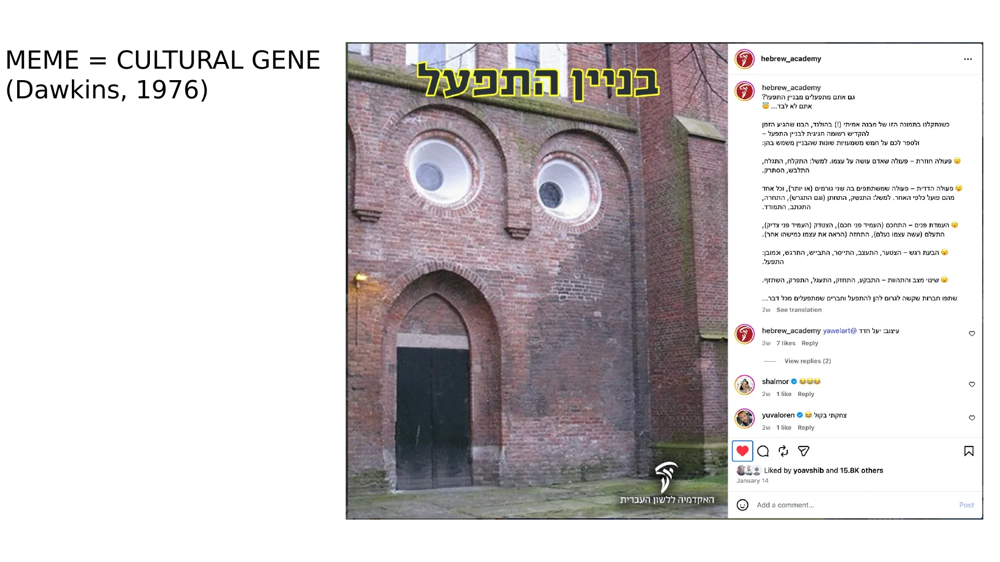
וחלק בלתי נפרד מהמם — ומהפרויקט — הוא ההומור. הומור מאפשר לצאת לרגע מנקודת המבט הרגילה ולהתבונן מבחוץ; הוא יוצר מרחק מן המובן מאליו ומאפשר לראות את המוכר אחרת. במובן הזה, אנחנו יכולים להרשות לעצמנו מעט יותר הומור בתכנון ובמקצוע — שהרי ריבוי צורות הסתכלות הוא חלק טבעי, ואף חיוני, מן העבודה האדריכלית.
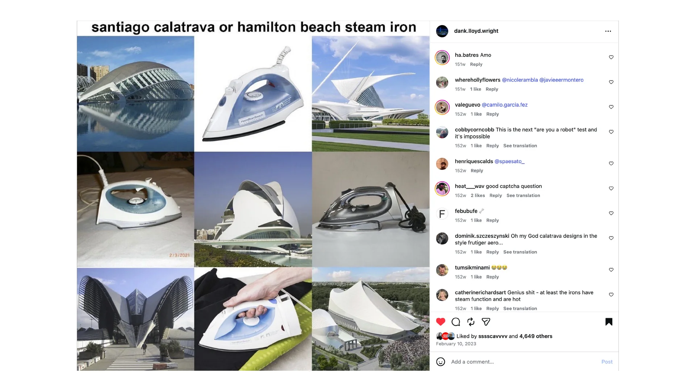
התהליך בסטודיו התחיל בקריאה ב״שיעורים אמריקאיים״ של איטאלו קאלווינו. קאלווינו בחר מושגים לקראת האלף הבא ונהג לפרקם להקשרים ולמערכות יחסים עם מושגים נגדיים — ומתוך העבודה עם צמדי המילים עלה הצמד שליווה את הפרויקט כולו:
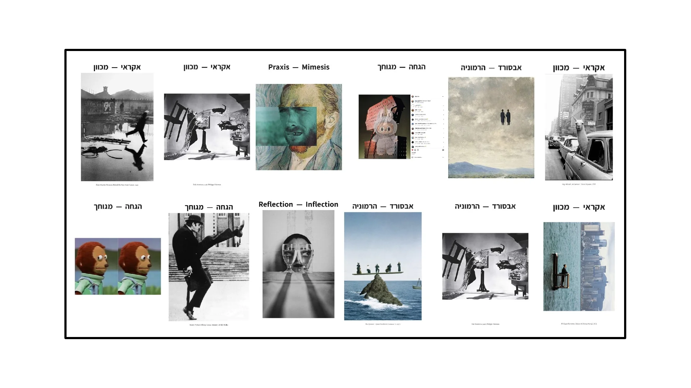
אבסורד — הרמוניה.
הרמוניה היא ביטוי לאופן המתאים שבו דברים מתחברים: היא חושפת מערכות יחסים והקשרים ומאפשרת להם משמעות משותפת. האבסורד הוא הפער המתגלה כשאנחנו מבקשים למצוא לדברים משמעות — הרגע שבו מה שנראה מובן מאליו מבקש פתאום שנביט בו מכיוון אחר. הצמד הזה נמצא בתנועה מתמדת הלוך ושוב: חיבור, הרכבה, נתק, פירוק — וחוזר חלילה.
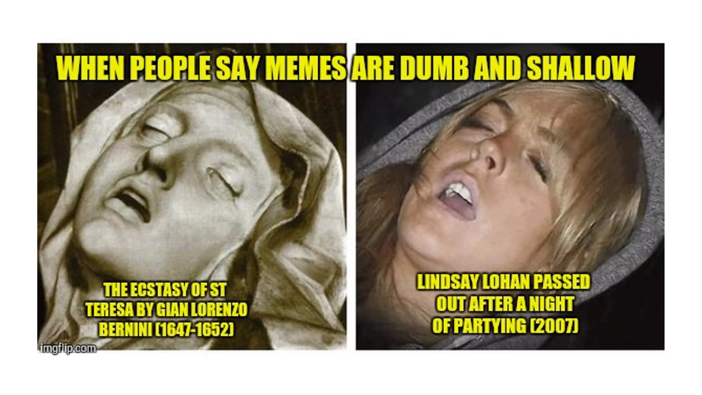
אפרופו המם וההרמוניה: אפשר לחשוב על הקלאסיקה עצמה כמם — פשוט איטי… מאוד. האורדרים הקלאסיים והפרופורציות העתיקות עברו בין תרבויות ותקופות, קיבלו בכל פעם מופעים ומשמעויות חדשים — ועדיין נשארו מזוהים. המם של ימינו עבר אל האינטרנט והגיע לקצב מסחרר, חוצה גבולות ותרבויות; וגם לאינטרנט יש קלאסיקה משלו.
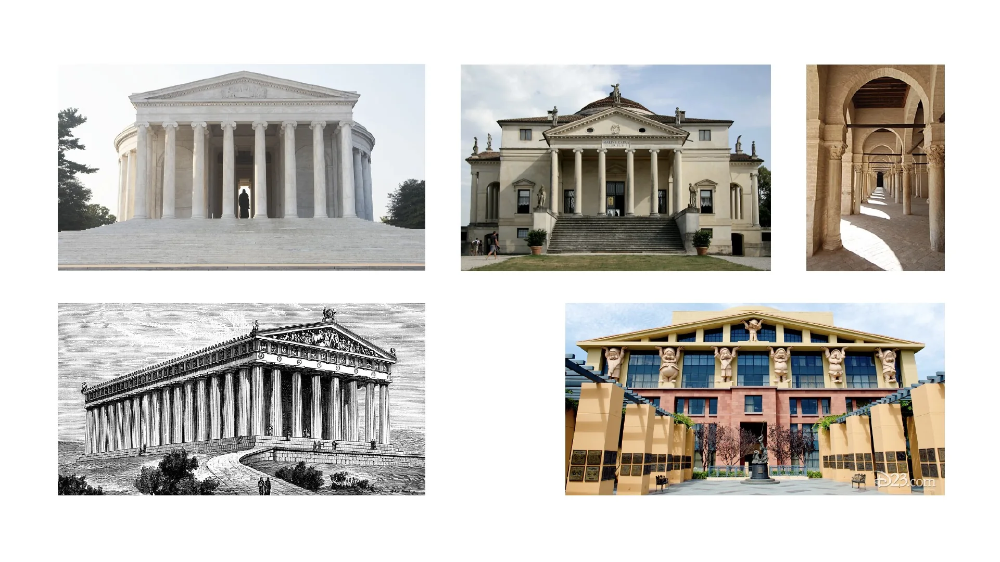
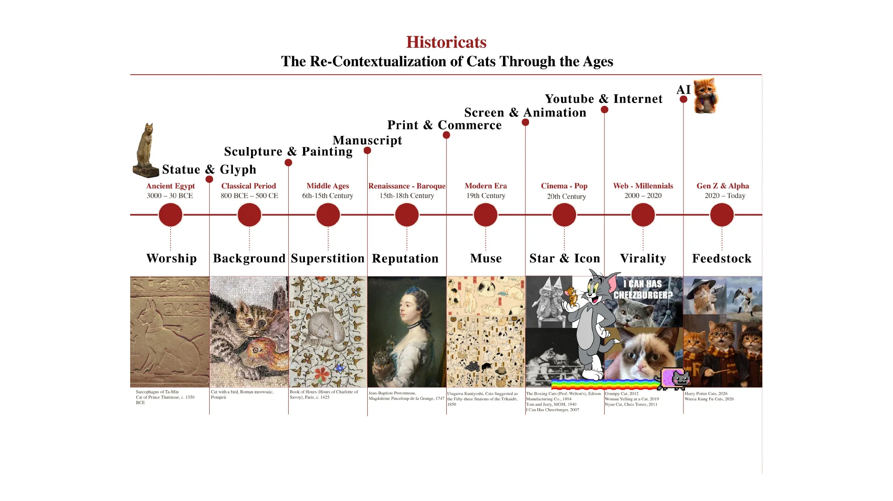
חתולים הם קלאסיקה אינטרנטית במיטבה — וסוכן כאוס קטן שליווה את הפרויקט כגורם טבעי לשבירת הקשר, באלגנטיות. כשנדרשנו לבחור דימוי לצמד המילים, לא היה ראוי מחתולים על אשר: המבנה שנראה בלתי־אפשרי ומערער על המוכר הופך, עבור החתול, לשימוש לגיטימי לגמרי. ההומור מייצר כאן קריאה מרחבית נוספת.
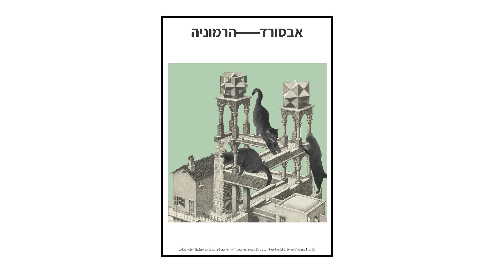
מכאן הדרך היתה קצרה — לחתולים על אשר על הירח, ובהמשך גם האנימציה הקלאסית קיבלה לפתע אורחים חדשים. בכל פעם חוזרת אותה פעולה: התבנית המוכרת פוגשת דבר זר מבחוץ, והמפגש מייצר אפשרות חדשה לקריאה.
החתולים היו ניסוי ראשון בשאלה כיצד שינוי הקשר משנה קריאה. השלב הבא: האם אפשר לקחת את הפעולה עצמה ולהפוך אותה לשפה אדריכלית? מקובייה אחת ושמונה גופים חותכים — בכל פעם נבחרים ארבעה — מתקבלות שבעים וריאציות: C(8,4)=70. שבעים הגופים הם אוצר המילים הקבוע של המערכת, מעין אותיות; ובצירוף חוקי חיבור — פאות חתוכות על־ידי גופים זהים מתחברות — נוצר פוטנציאל לשפה משותפת.
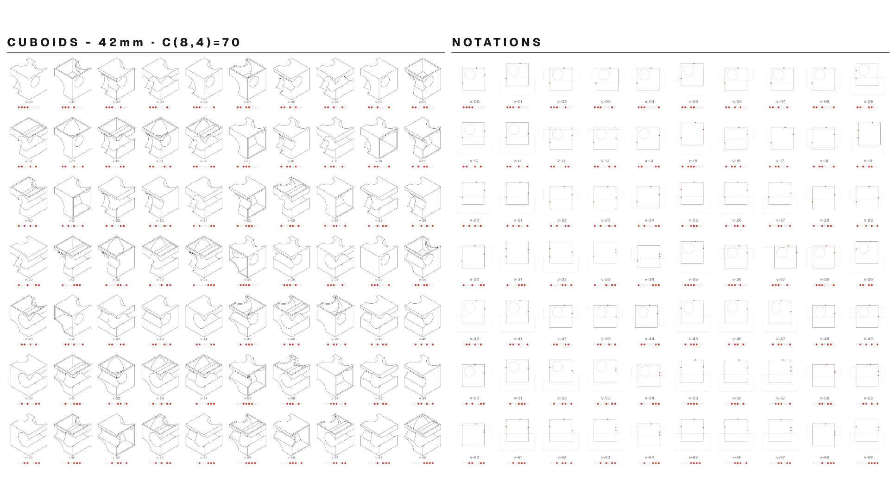
וכשיש פוטנציאל לשפה משותפת — אפשר להתחיל במלאכת התרגום.
כדי לעבור מאוצר המילים של הקוביות אל פעולה אדריכלית, יש לתווך בין סוגי ידע שונים לגמרי — משהו שיגשר על הפער אל הממים והמקום, ואל הקצב שבו הם חיים. כאן נכנס מודל השפה הגדול (LLM): מודל חישובי־סטטיסטי שאומן על כמויות עצומות של טקסט, ונחשף דרכן למרחב עצום של הקשרים תרבותיים. במערכת הוא משמש ״המתורגמן״ — ממשק סמנטי.
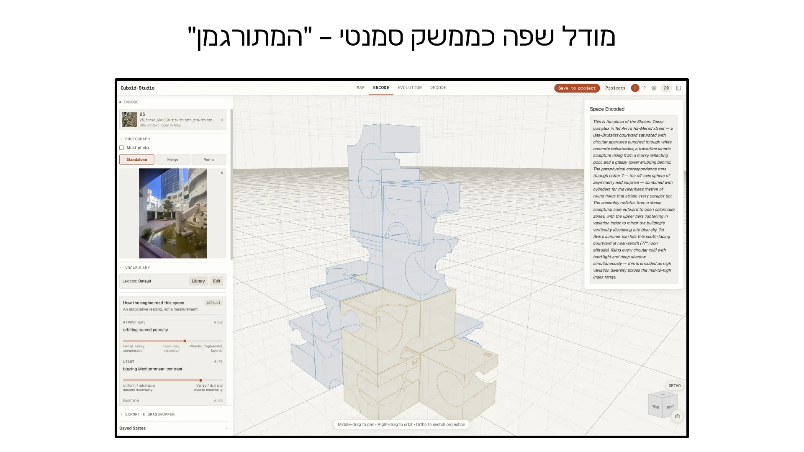
מודל השפה מקבל את קונטקסט האתר, את הממים עצמם ואת השפה שהמערכת מספקת לו, מבצע קריאה ומציע אפשרויות לניסוח היחסים בתוך השפה הגיאומטרית. זה נעשה בעזרת פרומפט הקושר בין הלקסיקון — היחידות שמהן המערכת עובדת — לבין הדקדוק המגדיר את היחסים והפעולות האפשריים ביניהן. במערכת שני פרומפטים, ושניהם פתוחים לעריכת המשתמש. לצד המודל פועל קוד דטרמיניסטי ״רגיל״, המבצע את הפעולות הגיאומטריות ושומר את מצב ההרכבה. ובסופו של דבר — מול מודל השפה והמחשב — המשתמש־המתכנן הוא שמגדיר את שפת הפעולה, עורך את ההצעות, בוחר ומחליט כיצד להמשיך.
התרגום עצמו עובר דרך חמישה שלבים:
מתחילים ממקום קיים — אתר פיזי. המערכת מושכת מפה, נתוני GIS, תכניות, צילומים ושכבות מידע, ומאפשרת לבחור את נקודת המבט שממנה ניגשים אל האתר.
המקום מופרד מהקשרו הפיזי, על בסיס מערכות היחסים שאנחנו מזהים בו.
הקריאה הופכת לשדה של אפשרויות — היא מקבלת ייצוג בתוך שפת המערכת ויכולה להתממש במופעים שונים.
הרגע שבו הממים מתערבים: התבנית הממטית פוגשת את המערכת ומכניסה לתוכה הפרעה, שינוי או יחס חדש.
ההרכבה חוזרת אל המקום, אל האתר, אל התכנית — ומשם, דרך הדיאגרמה, מתחברת להמשך מהלך התכנון.
חמשת השלבים ממופים לארבעה מצבים במערכת עצמה: MAP · ENCODE · EVOLUTION · DECODE.
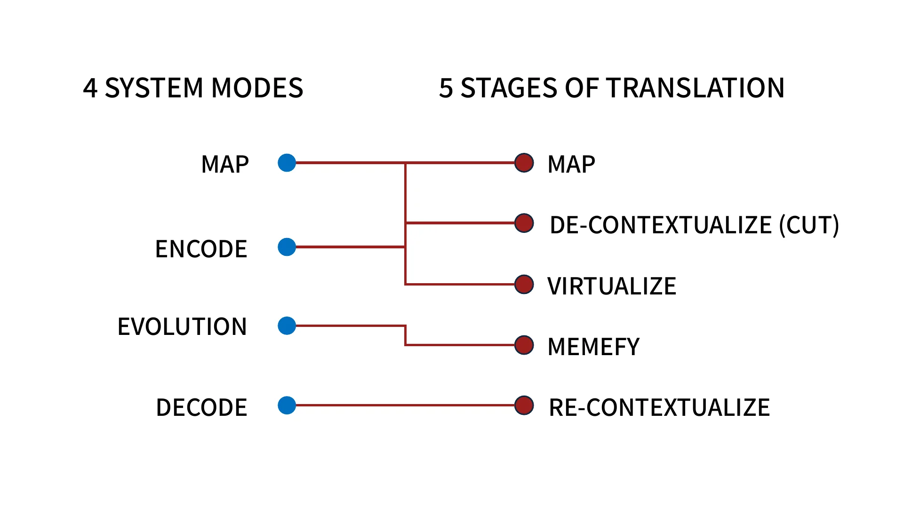
וכך זה עובד בפועל:
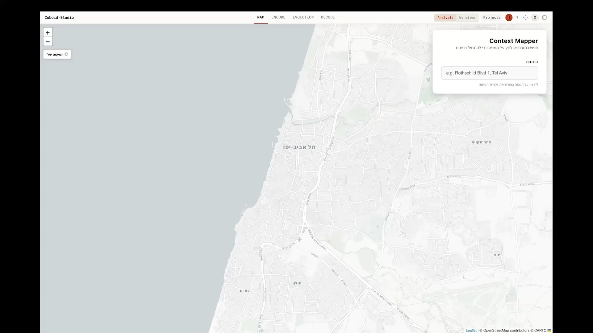
ב־Map מוגדרים האתר והקונטקסט הפעיל שלו. ב־Encode נבחרת תמונה מהאתר, ומודל השפה קורא אותה דרך הלקסיקון והדקדוק — הקריאה נחה על חמישה צירים: אווירה, אור, הרגשה, מקצב ומבנה, כל אחד עם נימוקו, וניתנת לקבלה, לעריכה או לדחייה. ב־Evolution נכנס המם כמנגנון המוסיף גורם חדש: המערכת קוראת אותו בשני שלבים — תחילה ניתוח של המם עצמו, ואז ביחס למצב הקיים — ומציעה אפשרויות; ההכרעה נשארת אדריכלית. וב־Decode — השבת ההקשר: הקומפוזיציה מקבלת ייצוג דו־ממדי מתוך אותה שפה גיאומטרית. אם הקוביות היו אותיות, על הסימנים האלה אפשר לחשוב כעל תווים. התוצאה היא דיאגרמה שאפשר לקרוא, לערוך, לבקר — ולהמשיך ממנה.